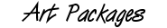

Artpack Issue One
'Begin'
Bought out on the tenth of January 1998
Download 1,189kb of file at Scene.org
Artpack Issue Two
'01001'
Bought out on the first of May 1998
Download 1,141kb of file at Scene.org
Artpack Issue Three
'Heaven'
Bought out on the second of July 1999
Download 777kb of file at Scene.org
Artpack Issue Four
'Bird'
Bought out on the forteenth of October 1999
Download 1,1,79kb of file at Scene.org
Artpack Issue Five
'DF2000'
Bought out on the thirtyfirst of December 1999
Download 1,800kb of file at Scene.org
[
Return
]
Defacto 2 © Copyright 1996-2000 Defacto 2 & Ipggi. All rights reserved.
webmaster@defacto2.net